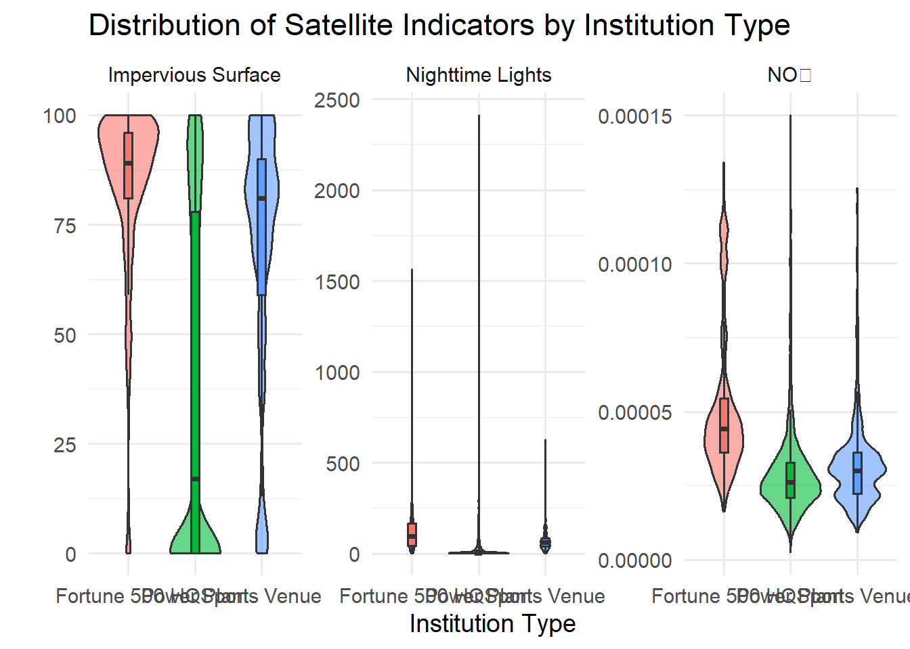
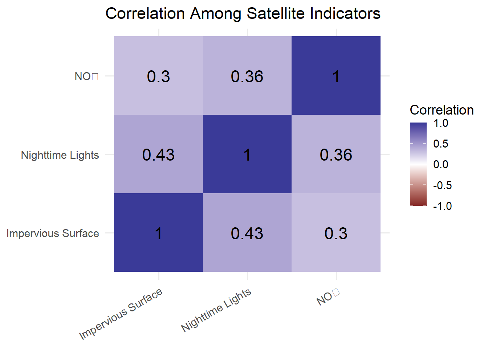

| institution_type | n | mean_light | median_light | mean_no2 | median_no2 | mean_impervious | median_impervious |
|---|---|---|---|---|---|---|---|
| Fortune 500 HQ | 499 | 119.25229 | 93.158330 | 5.128576e-05 | 4.416409e-05 | 83.50501 | 89 |
| Power Plant | 13323 | 15.75714 | 3.086667 | 2.936823e-05 | 2.623091e-05 | 36.17826 | 17 |
| Sports Venue | 2225 | 70.82671 | 62.105835 | 3.189231e-05 | 3.001898e-05 | 69.53348 | 81 |
Satellite-Based Environmental Analysis of Cultural and Community Institutions
Introduction
Understanding the environments surrounding key institutions offers valuable insights into urban development, infrastructure, and patterns of human activity. Unlike approaches relying solely on demographic or administrative data, remote sensing satellite imagery provides a standardized method for characterizing environmental conditions across thousands of locations. This project compares three categories of institutions across the United States:
- Fortune 500 Headquarters
- Power Plants
- Sports Venues
using three satellite-derived environmental indicators:
- Nighttime Lights (VIIRS)
- Nitrogen Dioxide (NO₂)
- Impervious Surface
Together, these variables describe different aspects of the built environment, including nighttime human activity, atmospheric pollution, and land development.
The objective of this study is to investigate whether different institution types occupy systematically different environments and to explore the relationships among these environmental indicators.
Data Sources
Three publicly available satellite-derived datasets were used.
Nighttime Lights
Nighttime light intensity was obtained from the VIIRS Day/Night Band annual composite. Nighttime lights are widely used as a proxy for urban activity, economic development, and human presence.
Nitrogen Dioxide (NO₂)
Tropospheric NO₂ concentrations were extracted from satellite observations. NO₂ is commonly associated with transportation networks, industrial activity, and fossil fuel combustion.
Impervious Surface
Impervious surface percentage was derived from satellite land cover products. High values indicate dense built environments consisting of roads, parking lots, and buildings.
Methods
The workflow consisted of the following steps:
- Import satellite measurements for each institution.
- Merge Nighttime Lights, NO₂, and Impervious Surface datasets.
- Remove observations containing missing values.
- Calculate summary statistics for each institution type.
- Visualize distributions of satellite indicators.
- Examine correlations among indicators.
- Perform one-way ANOVA to test differences between institution categories.
- Conduct Tukey post-hoc tests for pairwise comparisons.
Summary Statistics
The cleaned dataset contains environmental measurements for all three institution categories.
Fortune 500 headquarters typically exhibit the highest levels of nighttime lighting intensity and impervious surface coverage, reflecting the characteristics of highly urbanized environments.
Power plants exhibit significantly lower nighttime light intensity and a lower proportion of impervious surfaces, reflecting their location outside densely populated urban cores.
Sports venues occupy an intermediate position between these two extremes.
Distribution of Satellite Indicators
The following visualization compares the distributions of each satellite indicator across institution types.

Nighttime Lights provide the clearest separation between institution categories. Fortune 500 headquarters are concentrated in highly illuminated urban environments, while power plants are generally located in less illuminated regions.
Impervious Surface exhibits a similar pattern, reflecting differences in surrounding urban development.
NO₂ concentrations display greater overlap but still show meaningful variation among institution types.
Correlation Analysis

All three satellite indicators are positively correlated.
Impervious Surface exhibits the strongest relationship with Nighttime Lights, suggesting that urban development is closely associated with increased nighttime human activity.
NO₂ also displays positive relationships with both indicators, indicating that pollution generally increases alongside urbanization.
Statistical Analysis
One-way ANOVA was performed separately for each satellite indicator.
| Indicator | DF | F Statistic | P Value | Significant |
|---|---|---|---|---|
| Nighttime Lights | 2 | 2585.72 | 0.00e+00 | *** |
| NO₂ | 2 | 487.30 | 3.52e-206 | *** |
| Impervious Surface | 2 | 1066.95 | 0.00e+00 | *** |
All three indicators demonstrate statistically significant differences among institution categories.
Subsequent Tukey post-hoc comparisons indicate that nearly every pairwise comparison is statistically significant, suggesting that each institution type occupies distinct environmental settings.
Discussion
Satellite-derived environmental indicators successfully distinguish different categories of institutions.
Fortune 500 headquarters consistently occur within highly urbanized environments characterized by bright nighttime illumination and extensive impervious surfaces.
Power plants exhibit substantially different environmental characteristics, reflecting industrial siting decisions and land-use requirements.
Sports venues occupy intermediate environments, combining proximity to population centers with relatively large developed land areas.
Together, these findings demonstrate the usefulness of remote sensing products for characterizing institutional landscapes at national scales.
Limitations
Several limitations should be acknowledged.
- Satellite observations describe surrounding environments rather than institutional activity itself.
- The analysis represents a single time period and does not capture temporal changes.
- Institution locations are represented by point coordinates, which may not fully represent the spatial extent of large facilities.
Future Work
Future work may incorporate additional environmental indicators, including:
- NDVI vegetation index
- Land surface temperature
- Population density
- Road network density
- Building footprint density
Machine learning approaches could also be used to classify institution types using combinations of satellite-derived environmental variables.
Integrating these environmental indicators into the Museum Explorer application would provide users with richer geographic context surrounding cultural institutions.
Conclusion
This study demonstrates that satellite-derived environmental indicators provide meaningful insights into the built environments surrounding different institution types.
By integrating datasets on nighttime lights, nitrogen dioxide (NO₂), and impervious surfaces, we identified systematic differences among Fortune 500 headquarters, power plants, and sports stadiums. These findings demonstrate how remote sensing technology can complement traditional spatial datasets and facilitate large-scale analysis of environments shaped by human activity.